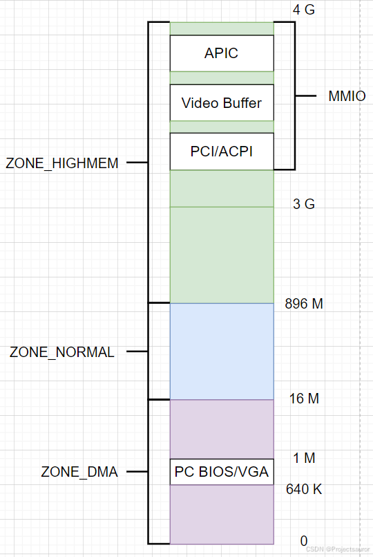
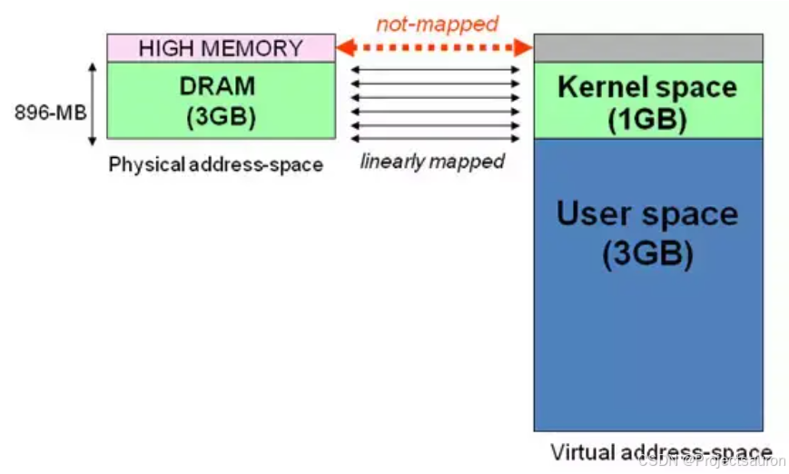
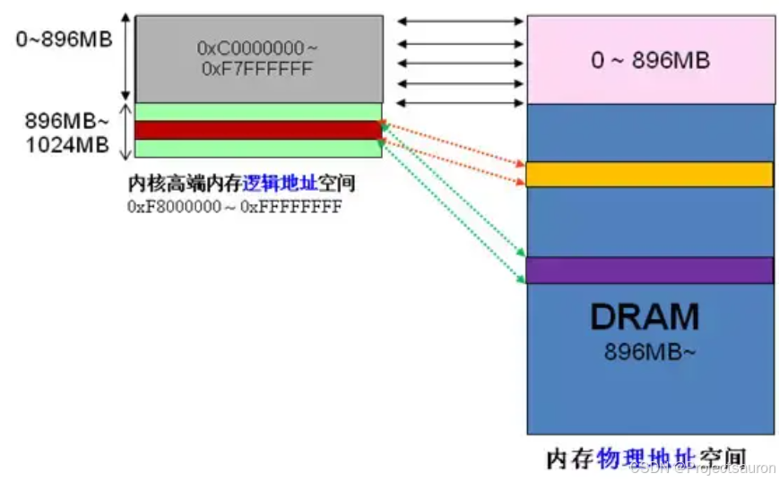

Linux 内存管理（六）之内存管理区
[TOC]
前言
为了支持 NUMA 模型，也即 CPU 对不同内存单元的访问时间可能不同，此时系统的物理内存被划分为几个节点，一个节点对应一个内存簇 bank，即每个内存簇被认为是一个节点。接着各个节点又被划分为内存管理区域，接下来将对内存管理区域进行讨论。
非一致内存访问（Non-Uniform MemoryAccess，NUMA）模型，是一种内存架构模型，用于多处理器系统中的内存访问。在 NUMA 系统中，每个处理器或处理器组件（如核心）都有自己的本地内存，并且可以访问其他处理器的远程内存。
一、x86 上的内存区域划分
在一个理想的计算机体系结构中，一个页框就是一个内存存储单元，可用于任何事情：存放内核数据和用户数据、缓冲磁盘数据等等。任何种类的数据页都可以存放在任何页框中，没有什么限制。
但是，实际的计算机体系结构有硬件的制约，这限制了页框可以使用的方式。尤其是 Linux 内核必须处理 80x86 体系结构的两种硬件约束：
- ISA 总线的直接内存存取（DMA）处理器有一个严格的限制：它们只能对 RAM 的前 16MB 寻址。
- 在具有大容量 RAM 的现代 32 位计算机中，CPU 不能直接访问所有的物理内存，因为线性地址空间太小。
为了应对这两种限制，Linux 2.6 把每个内存节点的物理内在划分为 3 个管理区（zone）在 80x86 UMA 体系结构中的管理区为：
- ZONE DMA：包含低于 16 MB 的内存页框。
- ZONE NORMAL：包含高于 16MB 且低于 896MB 的内存页框。
- ZONE HIGHMEM：包含从 896MB 开始高于 896MB 的内存页框。

内存区域类型结构定义在 include/linux/mmzone.h，其基本信息如下所示：
1 | |
不同的管理区的用途是不一样的，ZONE_DMA 类型的内存区域在物理内存的低端，主要是 ISA 设备只能用低端的地址做 DMA 操作。ZONE_NORMAL 类型的内存区域直接被内核映射到线性地址空间上面的区域，ZONE_HIGHMEM 将保留给系统使用，是系统中预留的可用内存空间，不能被内核直接映射。
二、管理区结构
1、struct zone
一个管理区（zone）由 struct zone 结构体来描述，zone 对象用于跟踪诸如页面使用情况的统计数、空闲区域信息和锁信息。里面保存着内存使用状态信息，如 page 使用统计，未使用的内存区域，互斥访问的锁等。
该结构体定义在 include/linux/mmzone.h 中，而其中各个字段的含义如下：
- free pages：管理区中空闲页的数目。
- pages_min：管理区中保留页的数目。
- pages_low：回收页框使用的下界，同时也被管理区分配器作为阈值使用。
- pages_high：回收页框使用的上界，同时也被管理区分配器作为阈值使用。
- lowmem_reserve：指明在处理内存不足的临界情况下每个管理区必须保留的页框数 0。
- pageset：数据结构用于实现单一页框的特殊高速缓存。
- lock：保护该描述符的自旋锁。
- free_area：标识出管理区中的空闲页框块。
- lru_lock：活动以及非活动链表使用的自旋锁。
- active_list：管理区中的活动页链表。
- inactive_list：管理区中的非活动页链表。
- nr_scan_active：回收内存时需要扫描的活动页数目。
- nr_scan_inactive：回收内存时需要扫描的非活动页数目。
- nr_active：管理区的活动链表上的页数目。
- nr_inactive：管理区的非活动链表上的页数目。
- pages_scaned：管理区内回收页框时使用的计数器。
- all_unreclaimable在管理区中填满不可回收页时此标志被置位。
- temp_priority：临时管理区的优先级。
- prev_priority：管理区优先级，范围在 12 和 0 之间。
- wait_table：进程等待队列的散列表，这些进程正在等待管理区中的某页。
- wait_table_size：等待队列散列表的大小。
- wait_table_bits：等待队列散列表数组大小，值为 $2^{order}$。
- zone_pgdat：内存节点。
- zone_mem_map：指向管理区的第一个页描述符的指针。
- zone_start_pfn：管理区第一个页框的下标。
- spanned_pages：以页为单位的管理区的总大小，包括洞。
- present_pages：以页为单位的管理区的总大小，不包括洞。
- name：指针指向管理区的传统名称：“DMA”，“NORMAL” 或 “HighMem”。
2、ZONE_PADDING
ZONE_PADDING 用于将数据保存在高速缓冲行。
zone 比较特殊的地方是它由 ZONE_PADDING 分隔的几个部分。这是因为堆 zone 结构的访问非常频繁。在多处理器系统中，通常会有不同的 CPU 试图同时访问结构成员。因此使用锁可以防止他们彼此干扰，避免错误和不一致的问题。由于内核堆该结构的访问非常频繁，因此会经常性地获取该结构的两个自旋锁：zone->lock 和 zone->lru_lock。
那么数据保存在 CPU 高速缓存中，就会处理得更快速。高速缓冲分为行，每一行负责不同的内存区。内核使用ZONE_PADDING 宏生成”填充”字段添加到结构中，以确保每个自旋锁处于自身的缓存行中。
该宏同样定义在目录 include/linux/mmzone.h 下：
1 | |
内核还用了 ____cacheline_internodealigned_in_smp，来实现最优的高速缓存行对其方式。该宏定义在 include/linux/cache.h：
1 | |
三、高端内存
1、高端内存的由来
有关 Linux 分段机制和分页机制的介绍可以参考：
Linux 内存管理（一）之分段机制
Linux 内存管理（三）之分页机制
当内核模块代码或线程访问内存时，代码中的内存地址都为逻辑地址，而对应到真正的物理内存地址，需要地址一对一的映射，如逻辑地址 0xc0000003 对应的物理地址为 0×3，0xc0000004 对应的物理地址为 0×4… …，逻辑地址与物理地址对应的关系为:
1 | |
假设按照上述简单的地址映射关系，那么内核逻辑地址空间访问为 0xc0000000 ~ 0xffffffff，那么对应的物理内存范围就为 0×0~0×40000000，即只能访问 1G 物理内存。若机器中安装 4G 物理内存，那么内核就只能访问前 1G 物理内存，后面 3G 物理内存将会无法访问。而这无法访问到的 3G 内存就是高端内存，也就是前面所讲的 ZONE HIGHMEM。

2、高端内存的访问
高端内存 HIGH_MEM 地址空间范围为 0xF8000000~0xFFFFFFFF（896MB～1024MB）。

当内核想访问高于 896MB 物理地址内存时，从 0xF8000000~0xFFFFFFFF 地址空间范围内找一段相应大小空闲的逻辑地址空间。借用这段逻辑地址空间，建立映射到想访问的那段物理内存（即填充内核 PTE 页面表），临时用一会，用完后归还。这样别人也可以借用这段地址空间访问其他物理内存，实现了使用有限的地址空间，访问所有所有物理内存。
因此，传统和 x86_32 位系统中，前 16M 划分给 ZONE_DMA，该区域包含的页框可以由老式的基于 ISAS 的设备通过 DMA 使用”直接内存访问”，ZONE_DMA 和 ZONE_NORMAL 区域包含了内存的常规页框，通过把他们线性的映射到现行地址的第 4 个 GB，内核就可以直接进行访问，相反 ZONE_HIGHME 包含的内存页不能由内核直接访问，尽管他们也线性地映射到了现行地址空间的第 4 个 GB。在 64 位体系结构中，线性地址空间的大小远远好过了系统的实际物理地址，内核可知直接将所有的物理内存映射到线性地址空间，因此 64 位体系结构上 ZONE_HIGHMEM 区域总是空的。
例如内核想访问 2G 开始的一段大小为 1MB 的物理内存，即物理地址范围为 0×80000000 ~ 0x800FFFFF。访问之前先找到一段 1MB 大小的空闲地址空间，假设找到的空闲地址空间为 0xF8700000 ~ 0xF87FFFFF，用这 1MB 的逻辑地址空间映射到物理地址空间 0×80000000 ~ 0x800FFFFF 的内存。映射关系如下：
| 逻辑地址 | 物理地址 |
|---|---|
| 0xF8700000 | 0x80000000 |
| 0xF8700001 | 0x80000001 |
| 0xF87FFFFF | 0x800FFFFF |
当内核访问完 0x80000000~0x800FFFFF 物理内存后，就将 0xF8700000~0xF87FFFFF 内核线性空间释放。这样其他进程或代码也可以使用 0xF8700000~0xF87FFFFF 这段地址访问其他物理内存。
3、高端内存的划分
Linux 内核将高端内存划分为 3 部分：
VMALLOC_START~VMALLOC_ENDKMAP_BASE~FIXADDR_STARTFIXADDR_START~ 0xFFFFFFFF
对于高端内存，可以通过 alloc_page() 或者其它函数获得对应的 page，但是要想访问实际物理内存，还得把 page 转为线性地址才行，这个过程称为高端内存映射。
对应高端内存的 3 部分，高端内存映射有三种方式：
- 映射到”内核动态映射空间”（noncontiguous memory allocation）
通过 vmalloc()，在”内核动态映射空间”申请内存的时候，就可能从高端内存获得页面，因此说高端内存有可能映射到”内核动态映射空间”中。
- 永久内核映射（permanent kernel mapping）
内核专门为此留出一块线性空间，从 PKMAP_BASE 到 FIXADDR_START ，用于映射高端内存。这个空间起叫”内核永久映射空间”或者”永久内核映射空间”。
永久内核映射允许内核建立高端页框到内核地址空间的长期映射。它们使用主内核页表中一个专门的页表，其地址存放在 pkmap_page_table 变量中。页表中的表项数由 LAST_PKMAP 宏产生。页表照样包含 512 或 1024 项，这取决于 PAE 是否被激活。（PAE 参见：Linux 内存管理（四）之物理地址扩展（PAE））
- 临时内核映射（temporary kernel mapping）
内核在 FIXADDR_START 到 FIXADDR_TOP 之间保留了一些线性空间用于特殊需求。这个空间称为”固定映射空间”在这个空间中，有一部分用于高端内存的临时映射。
在高端内存的任一页框都可以通过一个“窗口”（为此而保留的一个页表项）映射到内核地址空间。留给临时内核映射的窗口数是非常少的。
每个 CPU 都有它自己的包含 13 个窗口的集合,它们用 enum km_type 数据结构表示。该数据结构中定义的每个符号，如 KMBOUNCEREAD、KMUSERO 或 KMPTO，标识了窗口的线性地址。
内核必须确保同一窗口永不会被两个不同的控制路径同时使用。因此，km_type 结构中的每个符号只能由一种内核成分使用，并以该成分命名。最后一个符号 KTYPENR 本身并不表示一个线性地址，但由每个 CPU 用来产生不同的可用窗口数。
总结
一些体系结构其内存的物理寻址范围比虚拟寻址范围大的多。这样，就有一些内存不能永久地映射在内核空间上。为了解决这些制约条件，Linux 将内存划分为：ZONE_DMA 、ZONE_NOMAL 、ZONE_HIGHEM 。